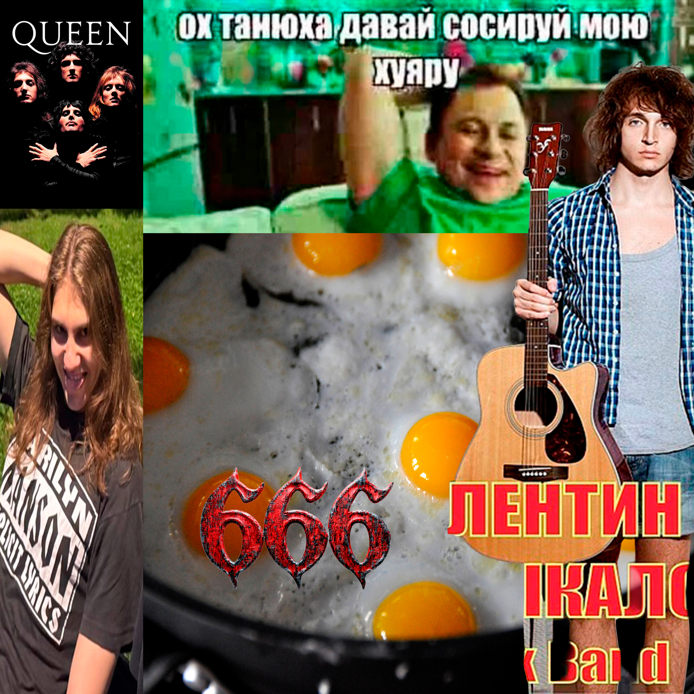
Это мой самый давний из нынешних друзей, с ним я познакомился в начале средней школы и это было не зря. Когда мы с Саввой были у него на ночевке он показал клип бэби метал, это было круто. Арсений довольно необычный человек, он не стесняется вообще ничего. В общем лучший друг и пусть я провожу с ним довольно мало времени, но с ним у меня дохера всего было, например первая группа и ваще он меня в муызку провёл можно сказать.
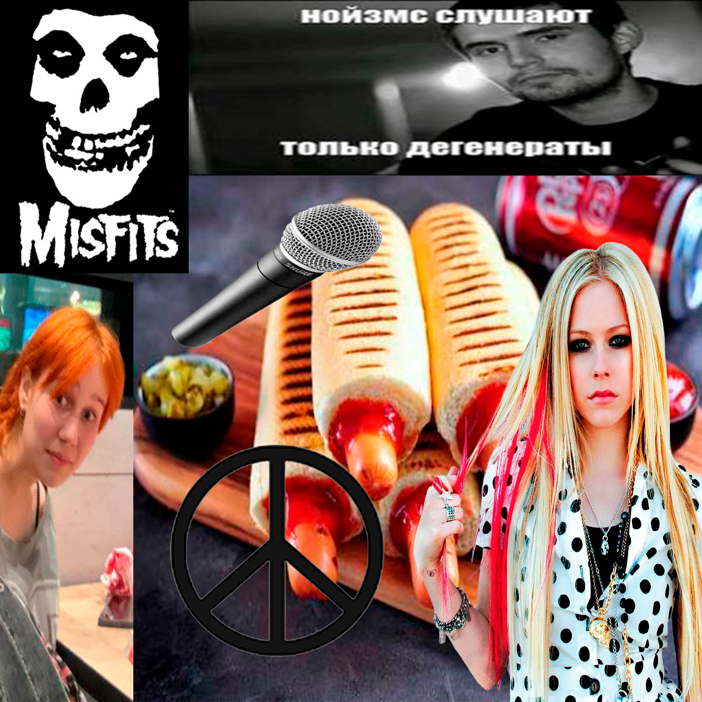
Не рассказала анекдот, поэтому познакомились. Крутая чувиха, которая круто поёт и в целом может с гордостью носить звание босса художки потому что это комплимент так-то. Сколько бы я не пытался я не могу воспринять её не рыжей и мне очень трудно верится в то что когда-то она была не ведьмой, ещё она каким-то магическим образом умудряется находить крутые шмотки и у неё всегда получается образ хипаря. Любимица Бабурина.
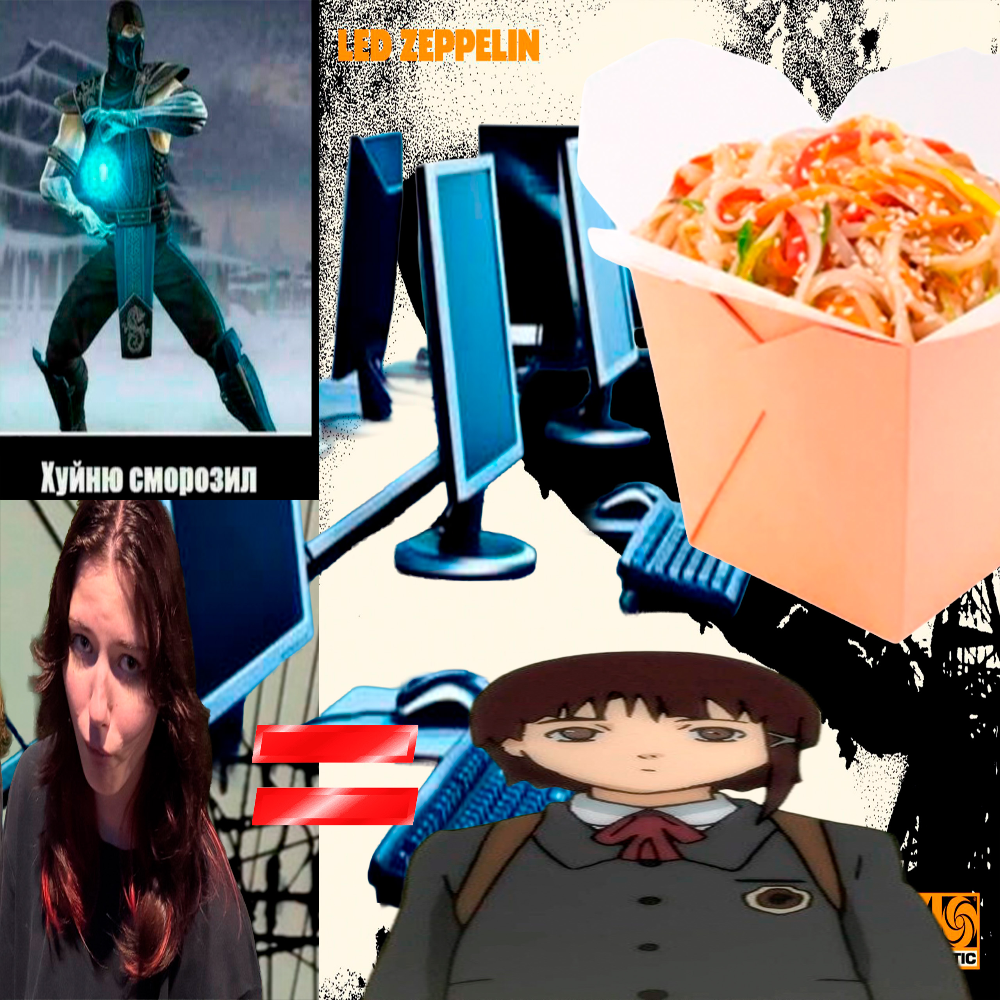
Если ей понравится что либо, то она найдёт все что с этим связано напрямую или косвенно. Чувиха которая если выйдёт на улицу то погибнет, но зато шарит в компутерах очень даже. Главнейшая фанатка экспериментов Лейн. С ней довольно интересно филосовски по филосовствовать на филосовские темы, или обсудить то как людей собаки насилуют и потом Христафор рождается. Единственный здоровый человек в дайвинчике спасибо Марьяне что нашла.
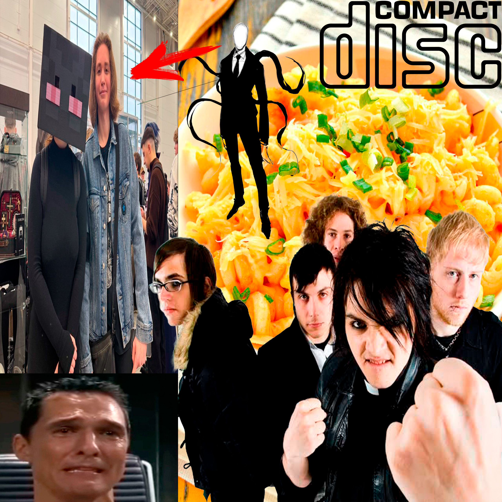
Приколы с крипом были не зря. Чувак который очень и очень любит побомбить, зачастую по вещам на которые забить можно за три секунды, но в этом есть и свой прикол. Главный фанат мкр контролировал запись каждого альбома. АБСОЛЮТНЫЙ мастер гитарной игры, Паша наверное лучший гитарист которого я встречал в жизни в целом. У него на роутере висел ебанный крестик. Он провёл меня в мир кемов, но неправильным способом, ибо я послушал блек парад и вернулся к ним только спустя пол года, надо начинать с ревенжа.
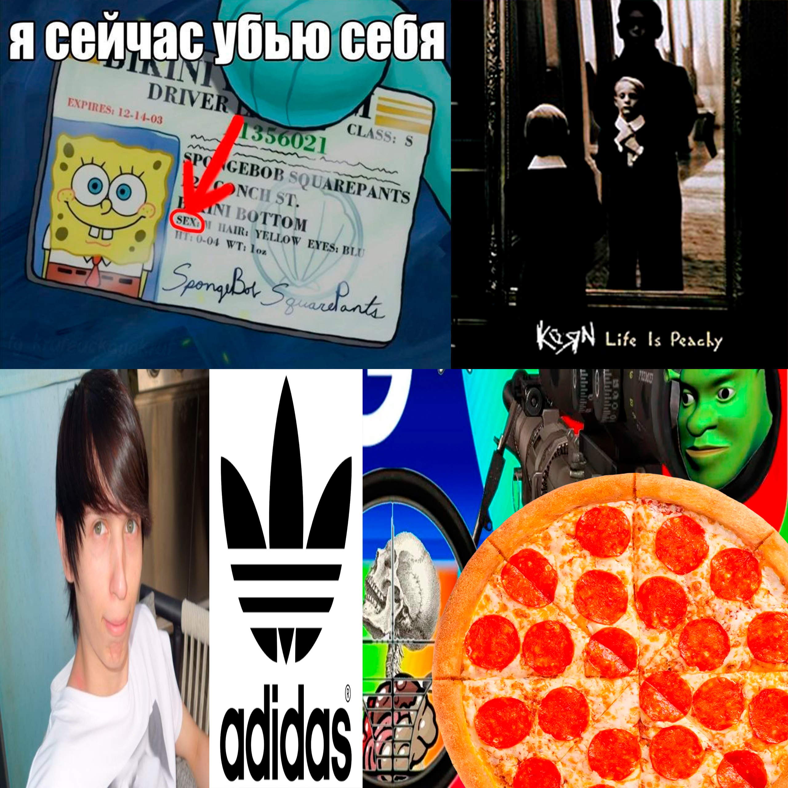
Ебанный создатель стиля. Женя имеет ахуеть какое чуткое чувство стиля, я не знаю как это описать. Не только в одежде, но и в творчестве везде в его проектах к примеру возьмём угарные видосы можно отследить касания его руки и сказать "это делал Женя". Музыкально он на меня оказал влияние, но я не могу сказать где и как, но оно точно есть. Евгендос всегда мыслит рационально, я знаю только один раз, когда он поступил странно и при этом это неправильным поступком тоже не назовешь. круто.
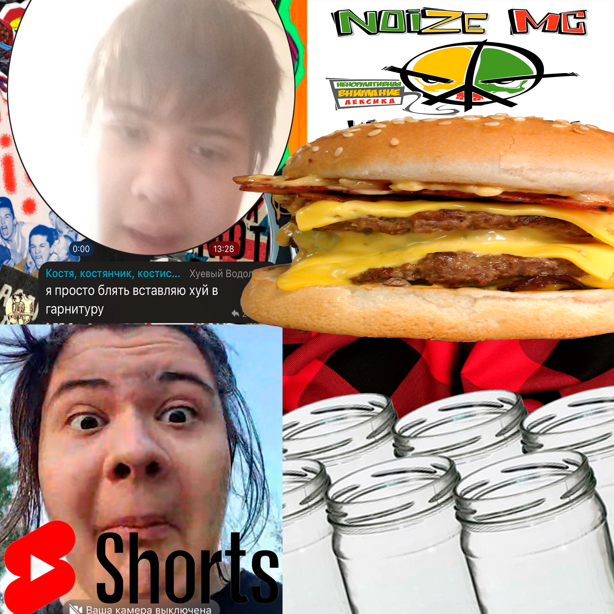
Планетарный крушитель. С ромой можно поговорить на самом деле очень о многом, и это всегда будет искренне с обоих сторон. Он очень угарный чувак,с мега угарным смехом (его надо услышать). Какое бы гавно в жизни у него не происходило, он всегда держится и это самое золотое качество которое может быть у человека не сдаваться. Нойза я слушаю в основном благодаря Роме, раньше мне его советовали и марьяна и женя, но именно после совета Романа, мои руки потянулись к этому исполнителю, что было абсолютно не зря.
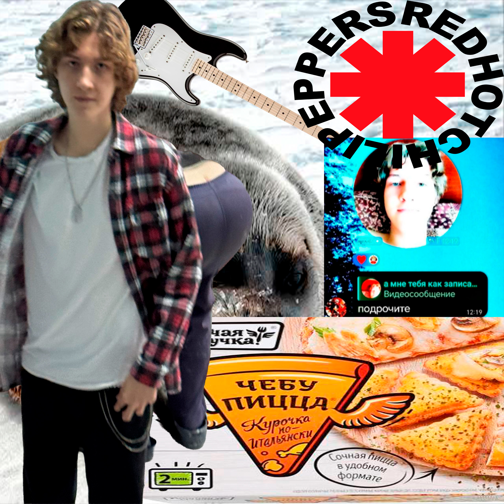
Подрочите. Чебупицц 100 уровня, он второй лучший гитарист в мире, я не представляю как у него устроен мозг, что он придумывает такие риффы, композиции и симфонии. Костя был первым из вандерфула, с ним я хотя бы кое как начал контактировать ещё за полгода, до великой гулянки с чечиками. Я не могу объяснить почему и как, но костя у меня жесточайше ассоциируется с рхчп, это прям он в моей голове, ни пантера, а именно перцы. Имеет непосредственную родственную связь с Мастейном ну или Егором.
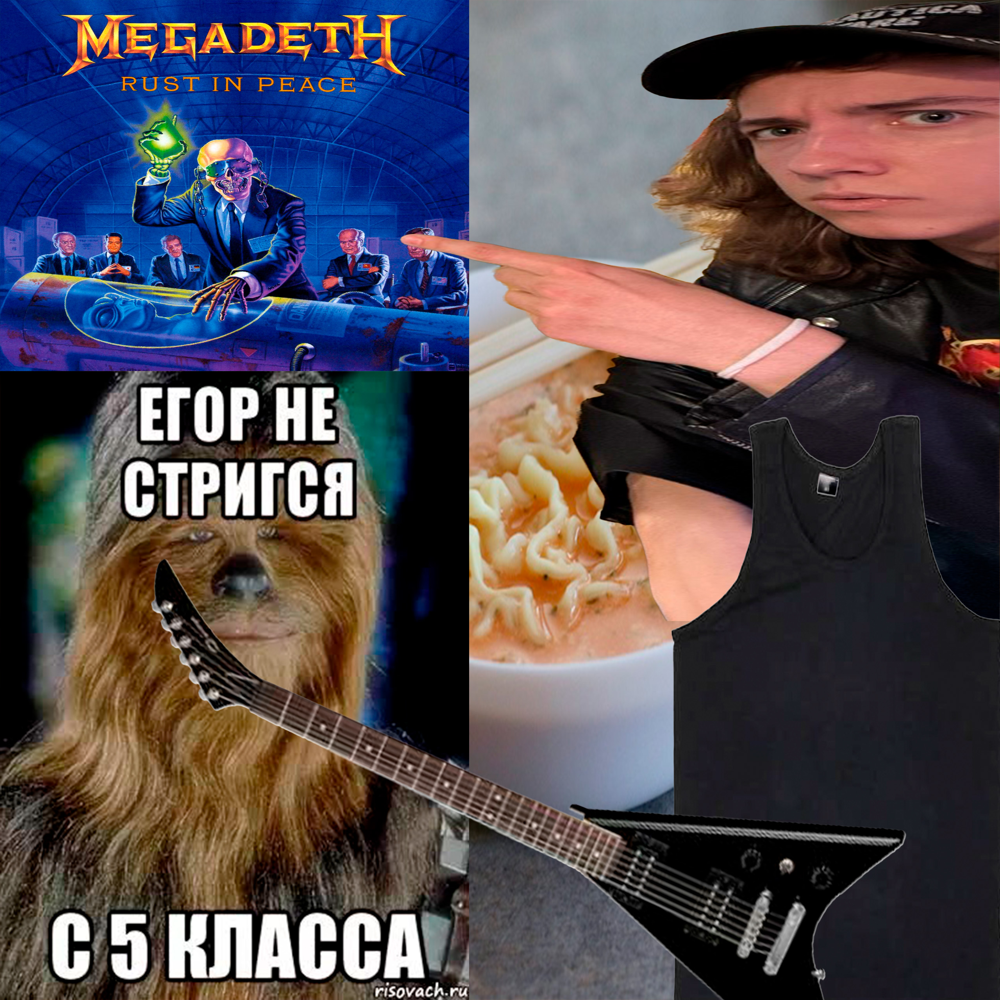
Ты мой друг Егор. Брат Кости, а значит тоже ахуенно играет на гитаре. Соло каверы, и просто каверы которые он выкладывает в свой канал это что-то очень невероятно крутое, прям ставлю царский лайкосек. Музыкальных наставлений я от него не получал, хотя пантеру они мне вместе с костей очень хорошо рекламировали и надо бы послушать нормально. Я помню как на одном из концертов, я увидел его и понял что не знаю имени, поэтому уверенно подошёл и сказал "я не помню как тебя зовут".
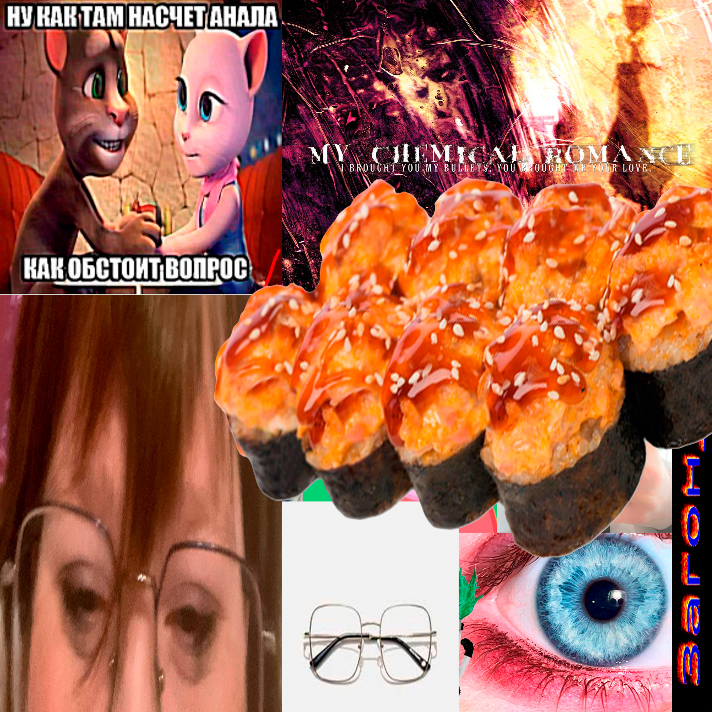
Чювиха появилась просто рандомно, но очень удачно. Ксюша продолжила дело паши и нормально провела меня в мкр и рассказывает лор до сих пор. Играет на гитаре для одного года крутейше. Главная Фанатка кемов, шарит за них будто лично каждого пеленала после родов, и за френком наблюдала больше всего. Если ей в глаза на свету посмотреть она высосет душу, настолько голубых глах я не видел, они светятся как у автоботов. Соавторка вселенной выпирашек и лабиринтов. Я несу тортик в гнильгисепп.
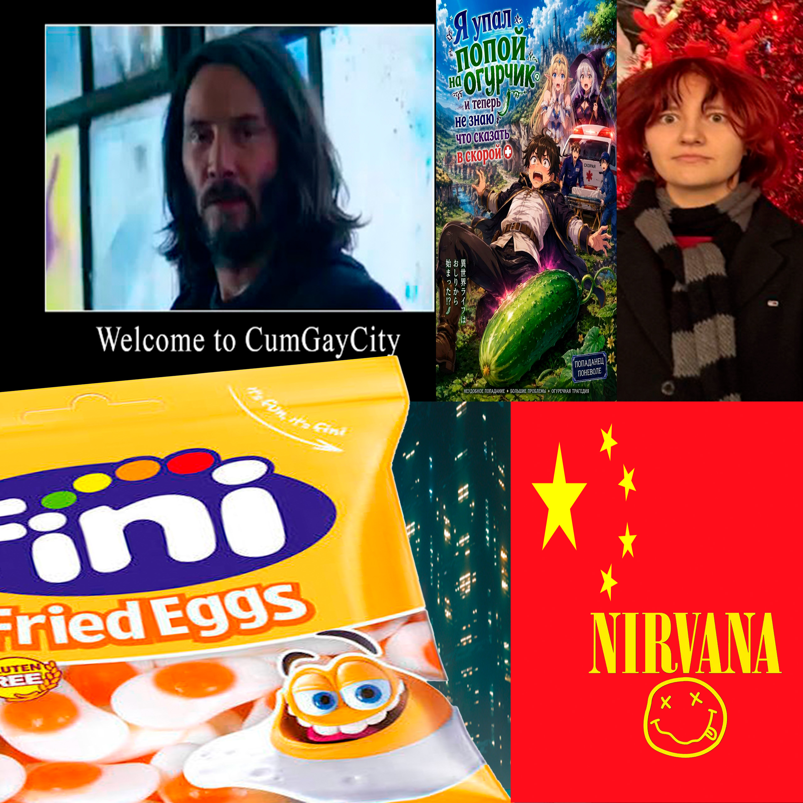
Мистер бист просит у неё деньги на свои видео. Саню я знаю не то чтобы хорошо, но она крутая чувиха это точно. Она очень круто поёт и в дд надо бы её поставить на основной вокал. Главнейшая фанатка нирваны, лично с Куртом знакома была. Сказать что у неё дома дохуя музыкальных инструментов значит ничего не сказать. Я до сих пор помню как у тебя выпал кусок бургера изо рта и ты оглядывалась что никто не увидел.
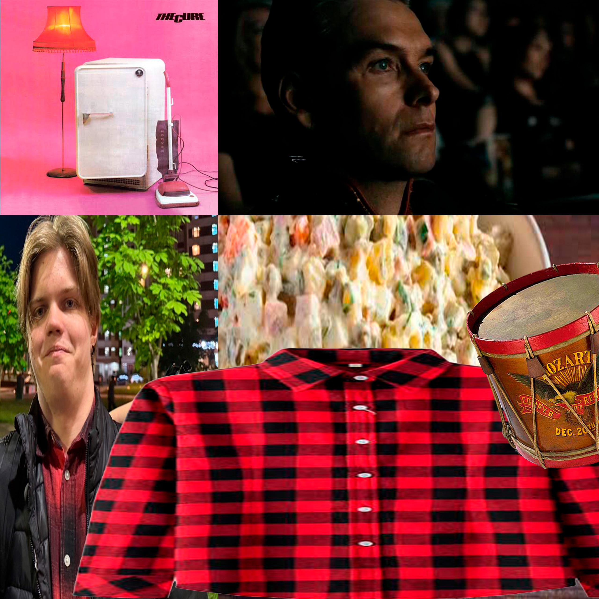
Спасибо за порваную рубашку. Про Глеба я знаю ещё меньше чем про Саню. Спасибо этому молодому человеку за прекраснейший трибьют денжер дейс. Глеб по ощущениям всегда делает какую-то угарную хуйню, ну смешивать 10 пакетиков чая в минеральной воде это угарно.